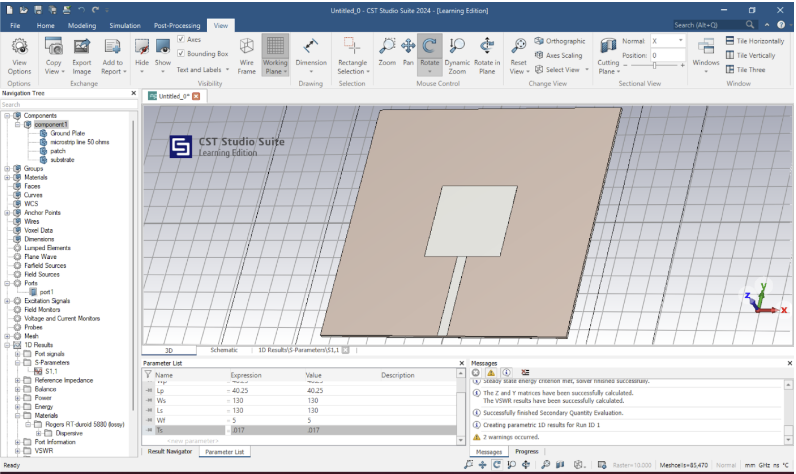
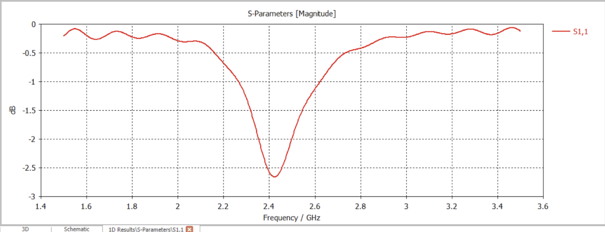
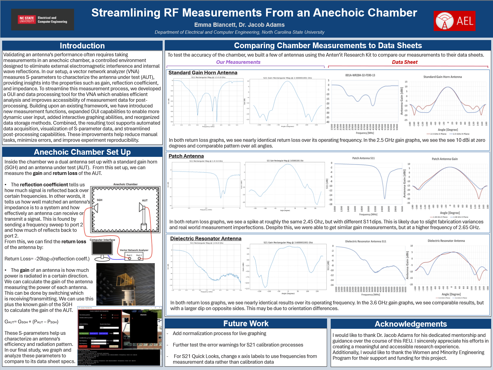

To learn more about CST and beamforming patch antenna arrays, I worked on creating and simulating a 2.4 Ghz patch antenna array. The 1x2 patch array antenna was designed to resonate at 2.4 GHz following the tutorial "Mastering Patch Array Antenna Design and Beam Steering with CST: Comprehensive Tutorial" by Prof. Halim Boutayeb, scaled down from a 1x4 array due to CST Studio Suite student edition mesh limitations. When designing the dimensions of a single patch antenna, it is important to consider variables such as material and desired operating frequency. The substrate material is Rogers RT/duroid 5880 with relative permittivity epsilonr=2.2 and thickness h=1.6 mm, while the patch and ground plane use copper with conductivity σ=5.8e. We also have our target frequency of 2.4 Ghz. Using these we can calculate the necessary width and length of the patch below.


After adding in a microstrip for the port connection, it was necessary to add a quarter wavelength for proper impedance matching. Below is the resulting 2.4 Ghz patch antenna with s-parameter data.
